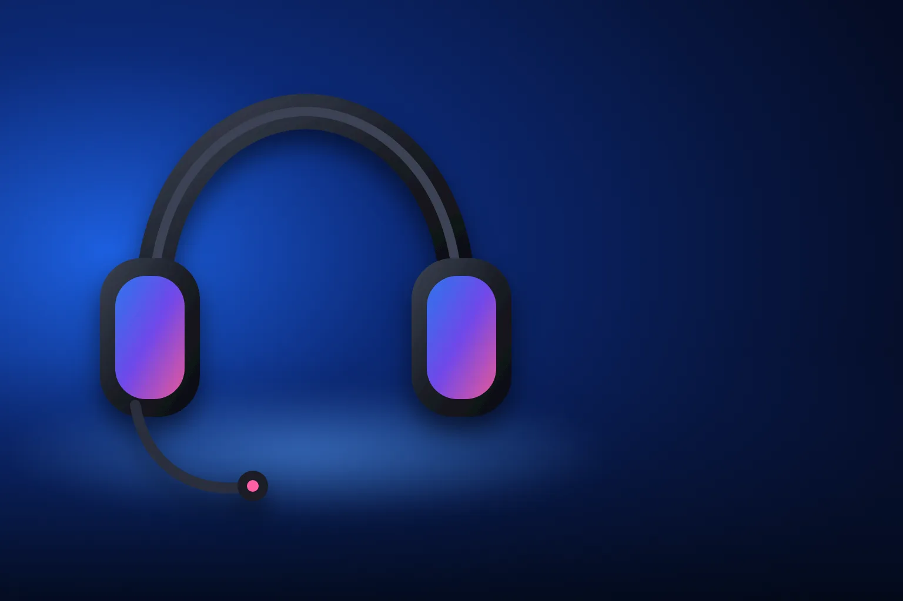

COM FIO PARA PC E CONSOLE
Melhor headset gamer com fio
Sem bateria para carregar e sem atraso: liga no P2 do controle, do notebook ou do PC. É onde o dinheiro rende mais.

Melhor custo-benefício com fioHyperX Cloud III
CURADORIA TECHAPROVADO · 2026
Com fio, sem fio, para PC ou para console: o headset certo depende de onde e como você joga. Separamos 15 modelos em 3 perfis, do custo-benefício ao top de linha, e dizemos para quem cada um vale a pena.

NOSSA LEITURA
Antes de olhar o tamanho do alto-falante, veja onde você vai ligar: o fio P2 funciona em quase tudo; o sem fio com receptor USB funciona no PC e no PS5; o Xbox só aceita sem fio compatível. Depois escolha o conforto e o microfone.
COMECE POR AQUI
COM FIO PARA PC E CONSOLE
Sem bateria para carregar e sem atraso: liga no P2 do controle, do notebook ou do PC. É onde o dinheiro rende mais.
SEM FIO PARA PC
Liberdade para levantar da cadeira, com receptor USB de baixa latência. O que muda entre eles é bateria, peso e microfone.

PLAYSTATION E XBOX
Sem fio de verdade no console exige o modelo certo: o PS5 e o Xbox usam conexões diferentes. Aqui estão os compatíveis.

A FICHA, TRADUZIDA
01 - CONEXÃO
O fio P2 (3,5 mm) é o mais universal: liga no controle do PS5 e do Xbox, no celular e no PC. Não tem bateria nem atraso.
O sem fio de jogo usa um receptor USB de 2,4 GHz, com atraso imperceptível. O Bluetooth sozinho atrasa o som e serve para música e celular, não para jogo competitivo. O Xbox só aceita headsets com o protocolo próprio da Microsoft.
Antes de comprar um sem fio para console, confira a compatibilidade no nome: muitos modelos têm uma versão para Xbox (com "X" no nome) e outra para PC e PlayStation.
02 - SOM ESPACIAL
Som espacial é o processamento que simula sons vindo de todas as direções em um headset de dois alto-falantes. Ajuda a perceber de onde vêm passos e tiros.
No PC, ele vem de softwares como DTS Headphone:X, Dolby Atmos ou o surround 7.1 da marca, normalmente pelo adaptador USB e um app. No PS5, o próprio console faz o áudio 3D Tempest em qualquer headset, e melhor nos oficiais da Sony.
Surround virtual não é mágica: em jogos competitivos, muita gente prefere estéreo bem separado. Vale testar os dois modos.
03 - MICROFONE
O microfone do headset serve para conversar com o time. Removível é prático para usar o headset na rua; o fixo costuma ser mais simples.
Para conversa em Discord, qualquer modelo da lista resolve. Para live e gravação, filtros como o Blue VO!CE da Logitech limpam chiado e barulho em tempo real.
A luz de mudo (LED) parece detalhe, mas evita o clássico "você está mudo" no meio da partida.
04 - CONFORTO
Headset bom é o que você esquece na cabeça. Pesa o peso total, a pressão da haste e o material das almofadas.
Almofadas de espuma com memória e couro sintético isolam melhor o som; as de tecido esquentam menos. Quem usa óculos deve preferir modelos leves e com pouca pressão.
Para sessões longas, os modelos leves da lista (HyperX Stinger 2 Core e Logitech G733) são os mais confortáveis.
05 - BATERIA
Nos sem fio, a bateria varia de um dia a várias semanas de uso. Mais importante que o número máximo é a carga rápida: alguns minutos na tomada para mais uma hora de jogo.
Prefira modelos que deixam jogar carregando, pelo cabo USB-C.
Recursos como iluminação RGB gastam bateria: desligá-la aumenta a duração.
A CURADORIA EM DETALHE
15 modelos da pesquisa
PERFIL · 5 MODELOS, DA ENTRADA AO TOP DE LINHA
O headset com fio é o caminho mais barato para um som bom no jogo e funciona em quase tudo: PC, notebook, celular e controle do PS5, Xbox e Switch pelo conector P2. A escada sobe em conforto para muitas horas, qualidade do microfone e som espacial, que ajuda a ouvir de onde vêm os passos.

COM FIO · ENTRADA 1 de 5
Com fio P2 · alto-falantes de 53 mm · microfone
Ver preço na AmazonPOR DENTRO DA ESCOLHA
Alto-falantes grandes de 53 mm, que dão graves encorpados para o preço, microfone fixo, haste ajustável e conector P2 (3,5 mm), que liga no controle do PS5 e do Xbox, no celular e no PC.
O H2002d é o ponto de partida que mais entrega por pouco: som alto e cheio, microfone que serve para chamada com o time e um conector que funciona em tudo. Para jogar casual, ele resolve. O próximo degrau ganha conforto e licença oficial do PlayStation.
| Conexão | Com fio, P2 (3,5 mm) |
|---|---|
| Alto-falantes | 53 mm |
| Impedância | 64 ohms |
| Microfone | Fixo |
| Compatível | PC, PS5, PS4, Xbox (pelo controle), celular |
Fonte: ficha e descrição do anúncio, conferidas em 16/11/2026. Dados informados pelo fabricante.

COM FIO · INTERMEDIÁRIO 2 de 5
Leve · licença oficial PlayStation · com fio P2
Ver preço na AmazonPOR DENTRO DA ESCOLHA
O salto é conforto e marca: é leve, tem almofadas macias que fecham bem a orelha e licença oficial da PlayStation. A HyperX tem assistência no Brasil pela Kingston.
O Stinger 2 Core é o headset para quem sente dor depois de uma hora de jogo: pesa pouco e distribui bem a pressão. O som é limpo e equilibrado, melhor para jogos de história do que para competição. É uma ótima compra para console.
| Conexão | Com fio, P2 (3,5 mm) |
|---|---|
| Tipo | Circumaural (cobre a orelha) |
| Impedância | 32,5 ohms |
| Licença | PlayStation |
| Ponto forte | Leveza e conforto |
Fonte: ficha e descrição do anúncio, conferidas em 16/11/2026. Dados informados pelo fabricante.
COM FIO · CUSTO-BENEFÍCIO 3 de 5
Melhor custo-benefício com fio
Drivers angulados de 53 mm · DTS Headphone:X · microfone com LED
Ver preço na AmazonPOR DENTRO DA ESCOLHA
Estrutura de metal, drivers de 53 mm inclinados na direção do ouvido, microfone removível com luz que avisa quando está mudo e o som espacial DTS Headphone:X no PC. Vem com cabo P2 e adaptador USB.
O Cloud III é a versão moderna do Cloud II, um clássico do custo-benefício. Ele junta construção resistente, conforto e um microfone claro. Para a maioria dos jogadores, não é preciso subir além deste.
| Conexão | P2 e USB (adaptador) |
|---|---|
| Alto-falantes | 53 mm angulados |
| Som espacial | DTS Headphone:X (PC) |
| Microfone | Removível, com LED de mudo |
| Estrutura | Alumínio |
| Compatível | PC, PS5, Xbox, Switch, celular |
Fonte: ficha e descrição do anúncio, conferidas em 16/11/2026. Dados informados pelo fabricante.

COM FIO · ALTERNATIVA 4 de 5
Outro caminho: graves mais limpos para FPS
Drivers de câmara dupla · alumínio · cabo removível
Ver preço na AmazonPOR DENTRO DA ESCOLHA
O diferencial são os drivers de câmara dupla: graves e médios saem separados, então explosão não abafa passo. Estrutura de alumínio, cabo trançado removível com controle de volume e certificação do Discord.
O Cloud Alpha é um desvio para o jogador competitivo: troca recursos por um som mais preciso. Em FPS, a separação de graves e médios ajuda a localizar o inimigo. Para quem não joga competitivo, o Cloud III custa menos e entrega o mesmo conforto.
| Conexão | Com fio, P2, cabo removível |
|---|---|
| Alto-falantes | 50 mm, câmara dupla |
| Estrutura | Alumínio |
| Microfone | Removível, certificado Discord |
| Impedância | 65 ohms |
Fonte: ficha e descrição do anúncio, conferidas em 16/11/2026. Dados informados pelo fabricante.

COM FIO · TOP DE LINHA 5 de 5
Top de linha com fio
Microfone Blue VO!CE · surround 7.1 DTS · alumínio e aço
Ver preço na AmazonPOR DENTRO DA ESCOLHA
O topo do perfil: o microfone tem os filtros Blue VO!CE, que limpam a voz em tempo real (tiram chiado, estalo e barulho de fundo), e o som surround 7.1 DTS X 2.0 no PC. Construção de alumínio e aço, com almofadas trocáveis.
O G PRO X foi feito com jogadores profissionais e se nota no microfone: é o melhor da seleção com fio. Se você só joga e conversa com amigos, o Cloud III basta; o G PRO X vale para quem transmite ou leva o jogo a sério.
| Conexão | P2 e USB (adaptador com placa de som) |
|---|---|
| Alto-falantes | 50 mm PRO-G |
| Surround | 7.1 DTS Headphone:X 2.0 (PC) |
| Microfone | Removível, Blue VO!CE |
| Estrutura | Alumínio e aço |
| Impedância | 35 ohms |
Fonte: ficha e descrição do anúncio, conferidas em 16/11/2026. Dados informados pelo fabricante.
PERFIL · 5 MODELOS, DA ENTRADA AO TOP DE LINHA
O headset sem fio de verdade para jogo usa um receptor USB de 2,4 GHz, com atraso imperceptível, e não só Bluetooth, que atrasa o som. A escada sobe em bateria, conforto, qualidade do microfone e software para ajustar o som.

SEM FIO · ENTRADA 1 de 5
Sem fio 2,4 GHz e Bluetooth · surround 7.1 virtual · microfone removível
Ver preço na AmazonPOR DENTRO DA ESCOLHA
O sem fio mais barato que vale a compra: receptor de 2,4 GHz para jogar sem atraso, surround 7.1 virtual, microfone removível e cabo USB-C, que também deixa usar com fio.
O Zeus Pro prova que dá para ter sem fio de verdade, com receptor e não só Bluetooth, nessa faixa. O som tem graves fortes, no gosto de quem joga ação. O próximo degrau, o JBL Quantum 360, informa bateria de 22 horas e tem carga rápida.
| Conexão | Sem fio 2,4 GHz, Bluetooth e cabo USB-C |
|---|---|
| Som | Surround 7.1 virtual |
| Microfone | Removível e ajustável |
| Impedância | 17 ohms |
Fonte: ficha e descrição do anúncio, conferidas em 16/11/2026. Dados informados pelo fabricante.
SEM FIO · CUSTO-BENEFÍCIO 2 de 5
Melhor custo-benefício sem fio
2,4 GHz · bateria de até 22 h · carga rápida
Ver preço na AmazonPOR DENTRO DA ESCOLHA
O salto é bateria e acabamento: até 22 horas, 5 minutos na tomada dão 1 hora de jogo, e dá para jogar carregando. Tem o som JBL Quantum Surround, microfone destacável e o controle "chat balance", que equilibra o volume do jogo e da conversa.
O Quantum 360 Wireless é o sem fio que equilibra tudo: bateria para a semana, carga rápida, peso baixo e o som caprichado da JBL. Para a maioria de quem joga no PC, não precisa ir além deste.
| Conexão | Sem fio 2,4 GHz (receptor USB) |
|---|---|
| Bateria | Até 22 horas; 5 min = 1 hora |
| Som | JBL Quantum Surround |
| Microfone | Boom destacável |
| Recursos | Chat balance, app Quantum Engine |
Fonte: ficha e descrição do anúncio, conferidas em 16/11/2026. Dados informados pelo fabricante.

SEM FIO · INTERMEDIÁRIO 3 de 5
Slipstream 24 bits · Dolby Atmos no PC · drivers de 50 mm
Ver preço na AmazonPOR DENTRO DA ESCOLHA
Conexão sem fio Slipstream com áudio de 24 bits e 48 kHz, Dolby Atmos no PC, drivers de 50 mm e haste flutuante, que se ajusta sozinha à cabeça. Iluminação RGB e microfone com qualidade de transmissão.
O HS80 sobe em qualidade de som: com Dolby Atmos, a posição dos sons fica mais clara, inclusive acima e abaixo do jogador. O microfone também é superior. Vale para quem joga no PC e se importa com áudio.
| Conexão | Sem fio Slipstream 2,4 GHz e USB |
|---|---|
| Áudio | 24 bits / 48 kHz |
| Som | Dolby Atmos (PC) |
| Alto-falantes | 50 mm |
| Haste | Flutuante, ajuste automático |
Fonte: ficha e descrição do anúncio, conferidas em 16/11/2026. Dados informados pelo fabricante.

SEM FIO · ALTERNATIVA 4 de 5
Outro caminho: o mais leve, com iluminação
O mais leve · bateria de até 29 h · Blue VO!CE · RGB
Ver preço na AmazonPOR DENTRO DA ESCOLHA
Feito para ser leve: tiara elástica, até 29 horas de bateria, alcance de 20 metros e o microfone com Blue VO!CE. A iluminação RGB frontal é personalizável no app G HUB.
O G733 é um desvio por conforto: em vez de mais potência, pesa menos e aperta menos. A bateria longa e o microfone com Blue VO!CE são vantagens claras. Se peso não incomoda você, o G PRO X Lightspeed tem construção mais robusta.
| Conexão | Sem fio Lightspeed 2,4 GHz |
|---|---|
| Bateria | Até 29 horas |
| Alcance | Até 20 m |
| Microfone | Removível, Blue VO!CE |
| Iluminação | RGB Lightsync |
| Compatível | PC e PlayStation (estéreo) |
Fonte: ficha e descrição do anúncio, conferidas em 16/11/2026. Dados informados pelo fabricante.

SEM FIO · TOP DE LINHA 5 de 5
Top de linha sem fio
Sem fio profissional · Blue VO!CE · aço e alumínio
Ver preço na AmazonPOR DENTRO DA ESCOLHA
A versão sem fio do headset dos profissionais: conexão Lightspeed, drivers PRO-G de 50 mm, surround 7.1 com tecnologia baseada em objetos, microfone Blue VO!CE e estrutura de aço e alumínio com espuma viscoelástica.
O G PRO X Lightspeed é o sem fio que não deixa nada a dever para o com fio: som preciso, microfone de transmissão e construção para durar anos. É o ponto de parada para quem leva o jogo a sério.
| Conexão | Sem fio Lightspeed 2,4 GHz |
|---|---|
| Alto-falantes | 50 mm PRO-G |
| Surround | 7.1 com áudio baseado em objetos (PC) |
| Microfone | Removível, Blue VO!CE |
| Estrutura | Aço e alumínio |
| Impedância | 32 ohms |
Fonte: ficha e descrição do anúncio, conferidas em 16/11/2026. Dados informados pelo fabricante.
PERFIL · 5 MODELOS, DA ENTRADA AO TOP DE LINHA
No console, o sem fio precisa ser compatível com a plataforma: o Xbox usa um protocolo próprio da Microsoft, e o PS5 funciona com receptores USB. Os modelos oficiais da Sony ganham o áudio 3D do PS5 e os botões no controle. A escada termina num headset que liga PS5, Xbox e PC ao mesmo tempo.

CONSOLE · ENTRADA 1 de 5
Sem fio compatível com Xbox · microfone boom removível
Ver preço na AmazonPOR DENTRO DA ESCOLHA
A versão do Quantum 360 feita para o Xbox: conecta sem fio no console (que não aceita receptores comuns), tem o som QuantumSOUND da JBL e microfone boom destacável com foco na voz.
No Xbox, poucas marcas licenciam o sem fio, e o Quantum 360X é a porta de entrada mais equilibrada: som encorpado e microfone claro. Para quem joga no PS5, os modelos da Sony mais abaixo fazem mais sentido.
| Conexão | Sem fio compatível com Xbox |
|---|---|
| Som | JBL QuantumSOUND Signature |
| Microfone | Boom removível |
| Compatível | Xbox Series X|S, Xbox One, PC |
| Impedância | 140 ohms |
Fonte: ficha e descrição do anúncio, conferidas em 16/11/2026. Dados informados pelo fabricante.

CONSOLE · ALTERNATIVA 2 de 5
Outro caminho: o headset oficial do Xbox
Headset oficial da Microsoft · conecta direto no Xbox e no Windows
Ver preço na AmazonPOR DENTRO DA ESCOLHA
O headset da própria Microsoft: conecta direto no Xbox, sem receptor, e no Windows. A integração com o console é total, com ajuste do equilíbrio entre jogo e conversa pelo próprio headset.
É um desvio para quem prefere o oficial: custa um pouco mais que o JBL e troca o som com mais graves por uma integração perfeita com o Xbox. Para quem também joga no PS5, não serve.
| Conexão | Xbox Wireless (direto no console) e Windows |
|---|---|
| Fabricante | Microsoft |
| Compatível | Xbox Series X|S, Xbox One, Windows |
Fonte: ficha e descrição do anúncio, conferidas em 16/11/2026. Dados informados pelo fabricante.
CONSOLE · CUSTO-BENEFÍCIO 3 de 5
Melhor custo-benefício para PS5
Oficial do PS5 · áudio 3D Tempest · dois microfones
Ver preço na AmazonPOR DENTRO DA ESCOLHA
O headset oficial do PS5: ajustado para o áudio 3D Tempest do console, que posiciona sons à sua volta, com dois microfones que reduzem o ruído, controles no próprio headset e carregamento por USB-C.
O PULSE 3D é a escolha óbvia para o PS5: o áudio 3D faz diferença em jogos como Returnal e Ratchet & Clank, e a integração com o console é a melhor possível. Para a maioria, não precisa subir para o PULSE Elite.
| Conexão | Sem fio (adaptador USB) e P2 |
|---|---|
| Som | Áudio 3D Tempest do PS5 |
| Microfones | Dois, com redução de ruído |
| Carregamento | USB-C |
| Compatível | PS5, PS4, PC |
Fonte: ficha e descrição do anúncio, conferidas em 16/11/2026. Dados informados pelo fabricante.

CONSOLE · ALTERNATIVA 4 de 5
Outro caminho: o som mais detalhado no PS5
Alto-falantes planares magnéticos · PlayStation Link · microfone retrátil
Ver preço na AmazonPOR DENTRO DA ESCOLHA
O sucessor do PULSE 3D troca os alto-falantes comuns por planares magnéticos, com distorção muito baixa e graves mais detalhados. Usa a conexão PlayStation Link (também liga no PC e no celular por Bluetooth) e tem microfone retrátil.
O PULSE Elite é um desvio de qualidade, não de categoria: o som planar é visivelmente mais limpo. O microfone retrátil é prático. Se você só joga, o PULSE 3D resolve por menos.
| Alto-falantes | Planares magnéticos |
|---|---|
| Conexão | PlayStation Link e Bluetooth |
| Microfone | Retrátil, com cancelamento de ruído |
| Compatível | PS5, PC, celular, PlayStation Portal |
Fonte: ficha e descrição do anúncio, conferidas em 16/11/2026. Dados informados pelo fabricante.

CONSOLE · TOP DE LINHA 5 de 5
Top de linha para PS5 e Xbox
PS5, Xbox e PC ao mesmo tempo · drivers de grafeno · base com HDMI
Ver preço na AmazonPOR DENTRO DA ESCOLHA
O topo: a base liga no PS5, no Xbox e no PC ao mesmo tempo (PLAYSYNC), e você troca de aparelho num botão do headset. Drivers PRO-G de grafeno, de 40 mm, dão som com separação precisa, e a base carrega o headset.
O A50 X resolve um problema que nenhum outro da lista resolve: um headset sem fio de verdade para PS5, Xbox e PC juntos. O som e o conforto são de topo. Vale para quem tem os três; para um só, fique nos degraus anteriores.
| Conexão | Base Lightspeed com HDMI e USB, Bluetooth |
|---|---|
| Plataformas | PS5, Xbox e PC ao mesmo tempo |
| Alto-falantes | 40 mm PRO-G de grafeno |
| Base | Carrega o headset e troca de aparelho |
| Impedância | 35 ohms |
Fonte: ficha e descrição do anúncio, conferidas em 16/11/2026. Dados informados pelo fabricante.
Nenhum modelo encontrado. Tente outro termo ou volte para Todos.
LADO A LADO
| Modelo | Perfil | Posição | Conexão | Destaque |
|---|---|---|---|---|
| Havit H2002d | Com fio | Entrada | Com fio, P2 (3,5 mm) | Com fio P2 · alto-falantes de 53 mm · microfone |
| HyperX Cloud Stinger 2 Core | Com fio | Intermediário | Com fio, P2 (3,5 mm) | Leve · licença oficial PlayStation · com fio P2 |
| HyperX Cloud III | Com fio | Custo-benefício | P2 e USB (adaptador) | Drivers angulados de 53 mm · DTS Headphone:X · microfone com LED |
| HyperX Cloud Alpha | Com fio | Alternativa | Com fio, P2, cabo removível | Drivers de câmara dupla · alumínio · cabo removível |
| Logitech G PRO X (com fio) | Com fio | Top de linha | P2 e USB (adaptador com placa de som) | Microfone Blue VO!CE · surround 7.1 DTS · alumínio e aço |
| Redragon Zeus Pro (sem fio) | Sem fio | Entrada | Sem fio 2,4 GHz, Bluetooth e cabo USB-C | Sem fio 2,4 GHz e Bluetooth · surround 7.1 virtual · microfone removível |
| JBL Quantum 360 Wireless | Sem fio | Custo-benefício | Sem fio 2,4 GHz (receptor USB) | 2,4 GHz · bateria de até 22 h · carga rápida |
| Corsair HS80 RGB Wireless | Sem fio | Intermediário | Sem fio Slipstream 2,4 GHz e USB | Slipstream 24 bits · Dolby Atmos no PC · drivers de 50 mm |
| Logitech G733 Lightspeed | Sem fio | Alternativa | Sem fio Lightspeed 2,4 GHz | O mais leve · bateria de até 29 h · Blue VO!CE · RGB |
| Logitech G PRO X Lightspeed | Sem fio | Top de linha | Sem fio Lightspeed 2,4 GHz | Sem fio profissional · Blue VO!CE · aço e alumínio |
| JBL Quantum 360X (Xbox) | Console | Entrada | Sem fio compatível com Xbox | Sem fio compatível com Xbox · microfone boom removível |
| Headset Sem Fio Xbox (Microsoft) | Console | Alternativa | Xbox Wireless (direto no console) e Windows | Headset oficial da Microsoft · conecta direto no Xbox e no Windows |
| Sony PULSE 3D (PS5) | Console | Custo-benefício | Sem fio (adaptador USB) e P2 | Oficial do PS5 · áudio 3D Tempest · dois microfones |
| Sony PULSE Elite | Console | Alternativa | PlayStation Link e Bluetooth | Alto-falantes planares magnéticos · PlayStation Link · microfone retrátil |
| Logitech G Astro A50 X + Base Station | Console | Top de linha | Base Lightspeed com HDMI e USB, Bluetooth | PS5, Xbox e PC ao mesmo tempo · drivers de grafeno · base com HDMI |
CONSIDERAÇÕES FINAIS
Construção de metal, conforto e microfone claro, em PC e console. É o headset que a maioria deveria comprar.
Os tops de linha (Logitech G PRO X e Astro A50 X) valem para quem faz live, joga competitivo ou tem vários consoles. Para jogar e conversar com os amigos, um bom headset com fio resolve por bem menos.
Com fio, o HyperX Cloud III. Sem fio para PC, o JBL Quantum 360 Wireless. Para PS5, o Sony PULSE 3D.
Os que usam receptor USB de 2,4 GHz, como todos os sem fio desta lista, têm atraso imperceptível. Só pelo Bluetooth, o atraso existe e atrapalha em jogo competitivo.
Com fio P2, sim, ligando no controle. Sem fio, depende: o PS5 aceita receptores USB; o Xbox só aceita modelos compatíveis com o protocolo da Microsoft.
Ajuda a localizar sons em jogos de ação e mundo aberto. Em jogos competitivos, muita gente prefere o estéreo. Os modelos com app permitem testar os dois.
Serve. Os microfones removíveis e com redução de ruído, como os da HyperX e da Logitech, funcionam bem em reuniões.
Porque ele muda várias vezes por dia. Usamos o preço só para montar a escada de cada perfil; o botão leva ao valor atualizado na loja.
TRANSPARÊNCIA EDITORIAL
Separamos os perfis pelo que as pessoas mais procuram: headset com fio custo-benefício, headset sem fio para PC e headset para PS5 e Xbox. Cada modelo precisa responder com clareza "para quem ele é o certo".
Em cada perfil há modelos em faixas de preço diferentes, e cada degrau precisa entregar algo que o anterior não entrega. Dois modelos com a mesma proposta não entram juntos.
Ficha e especificações foram conferidas nos anúncios das lojas em 16/11/2026.
Os links de compra desta página são de afiliado: se você comprar por eles, o TechAprovado pode ganhar uma comissão, sem custo adicional para você. Isso não muda a ordem nem a escolha dos produtos.
📲 GUIAS E DICAS NO SEU FEED
Dicas práticas antes de comprar, em carrosséis e vídeos curtos, sempre com link para o guia completo.